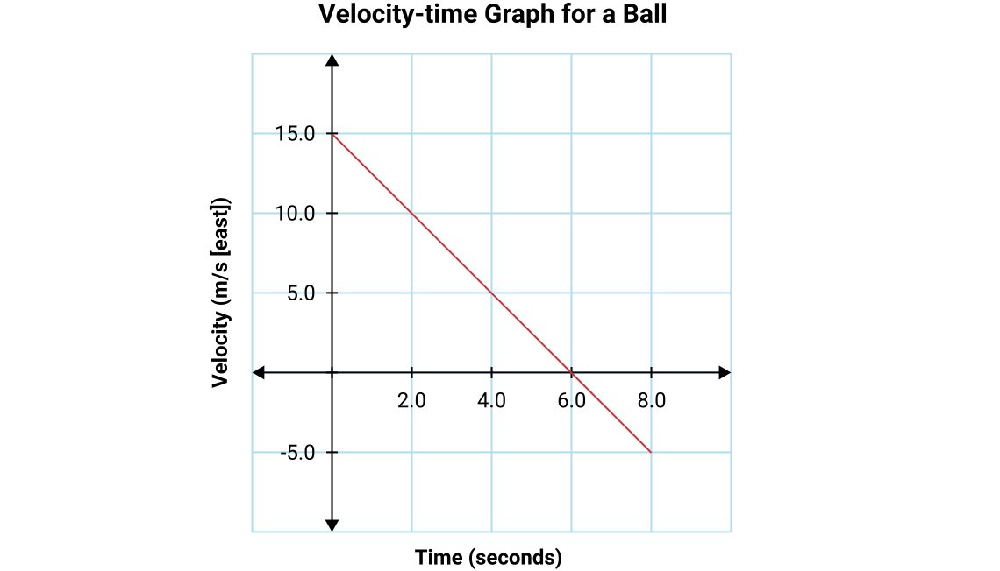
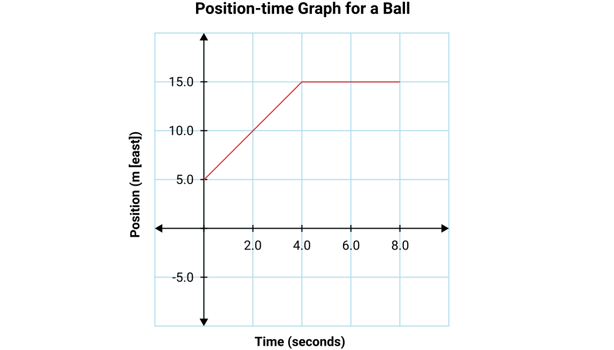
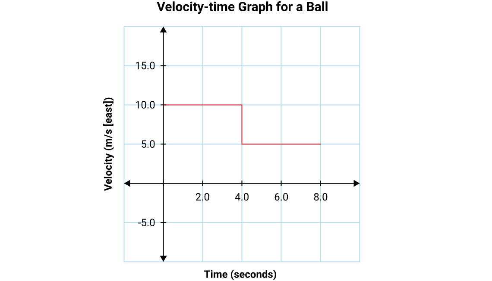
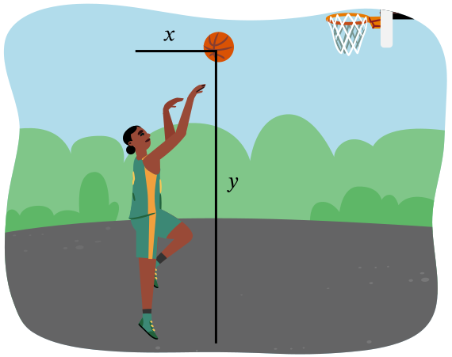

Answer the following questions related to graphs of motion. Your answer does not need to follow the GUESS structure, but you should show all work and explain your thinking.
Given this velocity-time graph of a ball’s motion, what is the ball’s displacement at 8.0 seconds? (5 marks)

Given this position-time graph of a ball’s motion, what is the ball’s velocity at 2.0 seconds and at 5.0 seconds? (5 marks)

Use this velocity-time graph of a ball’s motion to create a position-time graph, given that the ball starts at a position of 8.0 m [west]. (7 marks)

Answer the following kinematics problems using the usual GUESS structure.
A car accelerates at a rate of 4.05 m/s² [forward] over the course of a 395 m [forward] track, which takes 12.0 seconds. What was the car’s velocity at the start of the track? (5 marks)
A train accelerates at a rate of 0.128 m/s² [forward] for 75.0 seconds from its starting velocity of 2.00 m/s [backward]. What is its final velocity? (5 marks)
Starting at rest, a car takes 15.0 seconds to accelerate uniformly to 23.0 m/s [forward]. How far did it travel during this time? (5 marks)
Starting at 23.0 m/s [E], a car accelerates uniformly to 46.0 m/s [E] while travelling 52.0 m [E]. What acceleration did it experience during this trip? (5 marks)
A rock is dropped off a cliff and accelerates due to gravity. If the rock takes 18.63 seconds to reach the ground, how tall is the cliff? (5 marks)
A cannon ball is launched horizontally off a cliff. If the cliff is 38.7 m high and the ball landed 465.0 m [west] away from the base of the cliff, what was the initial velocity of the ball? (7 marks)
A group of physics students builds a catapult. They place it on the roof of a school, 18.0 m above the ground and launch a ball toward the east at 24.5 m/s [24° above horizontal]. When the ball hits the ground, how far away from the school will it be? (7 marks)
The following questions do not need a GUESS structure, but you could choose to use one. Show all work and explain your thinking. A basketball player attempted to throw their basketball through the hoop. The hoop has a diameter of 45.72 cm, is 3.05 metres above the ground, and its centre is located 6.00 metres in front of the player. The basketball has a radius of 11.93 cm.

A sensor on the side of the court measures the position of the ball at different times, and finds the following measurements.
Time (s)
Horizontal distance, x, (m)
Vertical distance, y, (m)
0.00
0.2034
2.6346
0.04
0.4068
2.8534
0.08
0.6102
3.0566
0.12
0.8136
3.2441
What is the ball’s horizontal velocity? (4 marks)
What was the ball’s initial vertical velocity? (5 marks)
At what times will the ball’s height be the same as the hoop? (6 marks)
When the ball is the same height as the hoop, how far forward has it moved? (4 marks)
Will the ball go through the hoop? How do you know? (5 marks)